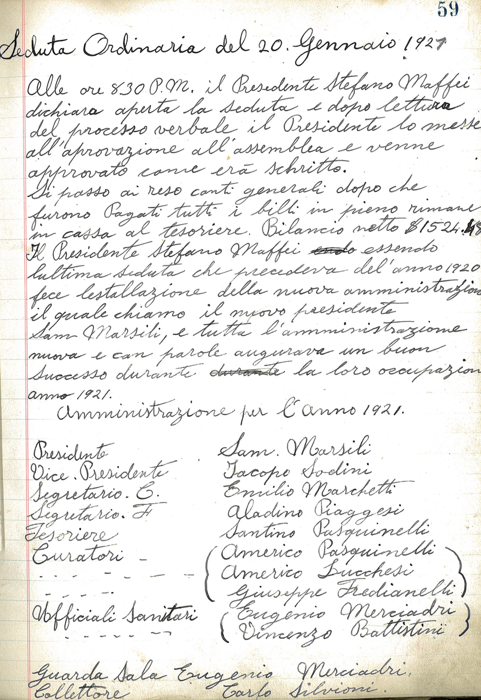Manuscript page number 59.
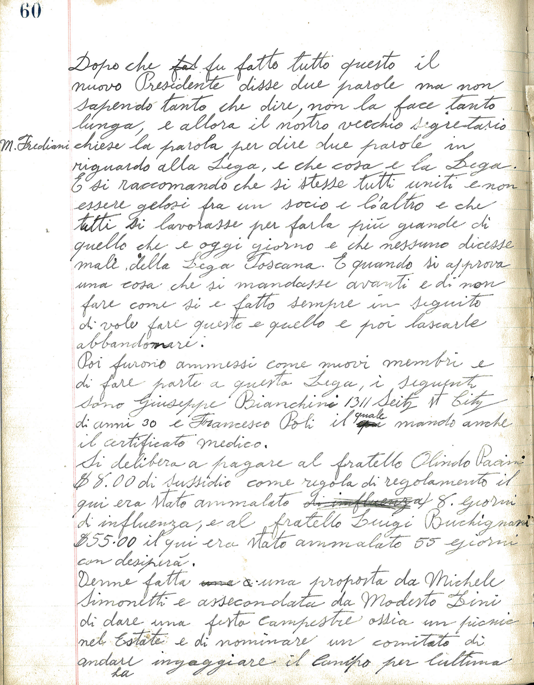Manuscript page number 60.
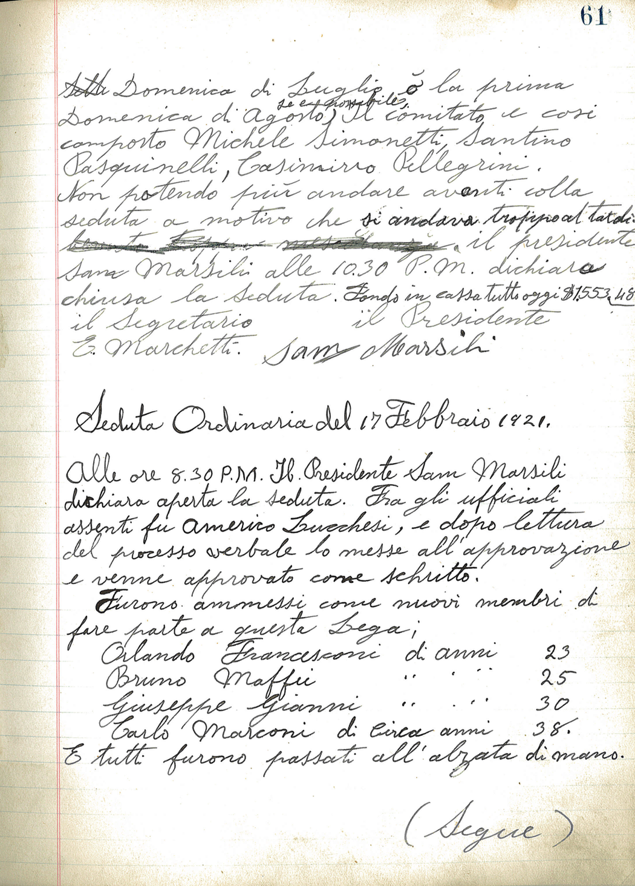Manuscript page number 61.
Seduta Ordinaria del 20 Gennaio 1921
Alle ore 830 P.M. il Presidente Stefano
Maffei
dichiara aperta la seduta e dopo lettura
del
processo verbale il Presidente lo messe
all’aprovazione all’assemblea e venne
approvato come erà schritto.
Si
passo ai reso canti generali dopo che
furono Pagati tutti i billi in pieno
rimane
in cassa al tesoriere Bilancio netto $1524.48.
Il Presidente Stefano Maffei essendo
lultima seduta che precedeva del’anno 1920
fece lestallazione della nuova
amministrazione
il quale chiamo il nuovo
presidente
Sam Marsili, e tutta l’amministrazione
nuova e
can parole augurava un buon
successo durante la loro occupazione
anno 1921
Amministrazione per l’anno 1921
Presidente
Sam Marsili
Vice Presidente
Jacopo Sodini
Segretario C
Emilio Marchetti
Segretario F
Aladino Piaggesi
Tesoriere
Santino Pasquinelli
Curatori
Americo
Pasquinelli
Americo Lucchesi
Giuseppe
Fredianelli
Ufficiali Sanitari
Eugenio Merciadri
Vincenzo
Battistini
Guarda Sala
Eugenio Merciadri
Collettore
Carlo Silvioni
Dopo che fu fatto tutto questo il
Nuovo
Presidente disse due parole ma non
sapendo tanto che dire, non la
face tanto
lunga, e allora il nostro vecchio
segretario
M. Frediani chiese la parola per dire due parole
in
riguardo alla Lega, e che cosa e la Lega
E si raccomando che si
stesse tutti uniti e non
essere gelosi fra un socio e lo’altro e che
tutti si lavorasse per farla più grande di
quello che e oggi giorno e che
nessuno dicesse
male della Lega Toscana. E quando si approva
una cosa
che si mandasse avanti e di non
fare come si e fatto sempre in seguito
di vole fare queste e quello e poi lascarle
abbandonari.
Poi furono ammessi come nuovi membri e
di fare parte a questa Lega,
i seguenti
sono
Giuseppe Bianchini 1311 Seitz it
City
di anni 30
e Francesco Poli
il quale mando anche
il artificato medico.
Si delibera a fragare al fratello Olindo Pacini
$8.00 di sussidio come regola di
regolamento il
qui era nato? ammalato di
influenza 8 giorni
di influenza, e al fratello Luigi
Buchignani
$55.00 il qui era stato Ammalato 55
giorni
con desiperá.
Venne fatta una proposta da Michele
Simonetti e
assecondata da Modesto
Zini
di dare una festa campestre ossia un picnic
Nel
Estate e di nominare un comitato di
andare ingaggiare il Campo per
lultima
La
Domenica di Luglio à la prima
Domenica di Agosto,
il comitato e cosi
Composto
Michele Simonetti
Santino
Pasquinelli,
Casimiro Pellegrini,
Non potendo più andare avanti colla
seduta a motive che si
andava troppo al tardi.
---------------- il
presidente
Sam Marsili alle 10.30 P.M. dichiava
chiusa
la Seduta. Fondo in cassa tutto oggi $1553.48
il Segretario il Presidente
E. Marchetti
Sam Marsili
Manuscript page number 61.
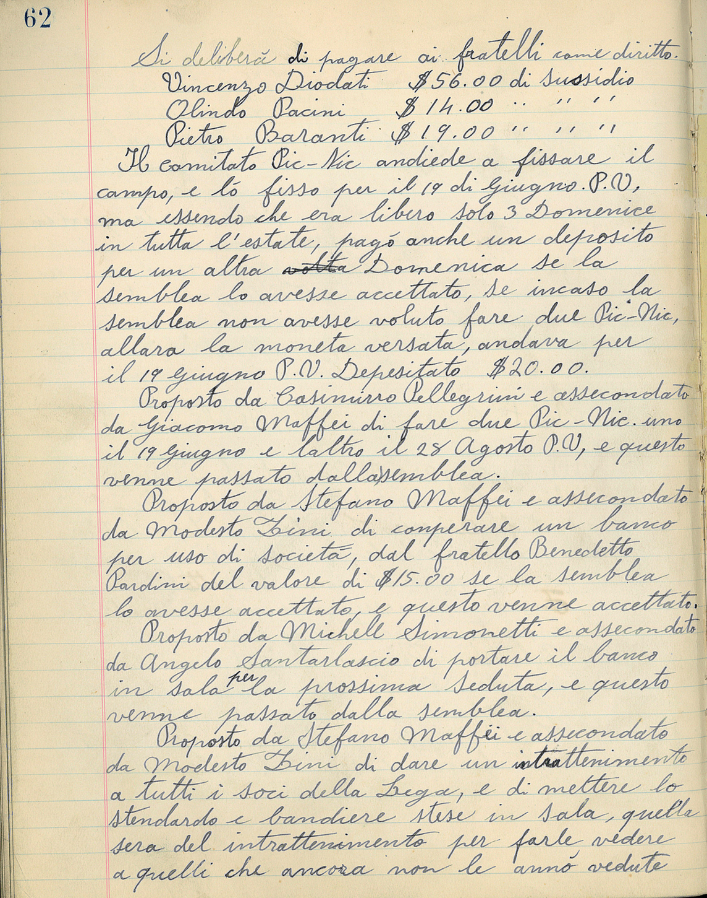Manuscript page number 62.
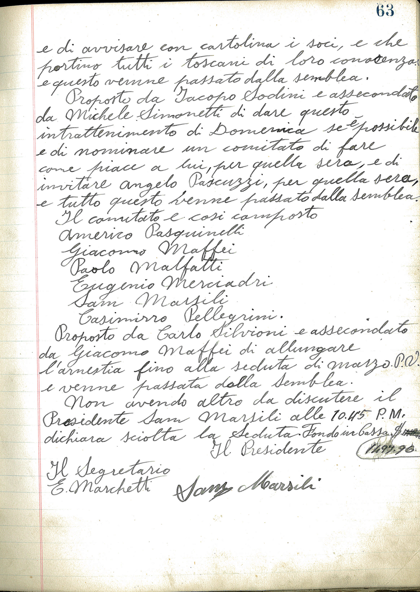Manuscript page number 63.
Seduta Ordinaria del 17 Febbraio 1921
Alle ore 8.30 P.M. Il Presidente Sam
Marsili
dichiara aperta la seduta.
Fra gli ufficiali
assenti fu
Americo Lucchesi
, e dopo lettura
del processo verbale lo messe all’approvazione
e
venne approvato come schritto.
Furono ammessi come nuovi membri di
fare parte a questa Lega;
Orlando Francesconi di anni
23
Bruno Maffei " " 25
Giuseppe Gianni " " 30
Carlo Marconi di circa anni
38
E tutti furono passati all’alzata di mano.
(Segue)
Si delibera’ di pagare ai fratelli come diritto.
Vincenzo
Diodati
$56.00 di sussidio
Olindo
Pacini
$14.00 “ “ “
Pietro
Baranti
$19.00 “ “ “
Il comitato Pic-Nic andiede a fissare il
campo, e lo’ fisso per il 19
di giugno P. V.,
ma essendo che era libero solo 3 Domenice
in tutta
l’estate, pago’ anche un deposito
per un altra volta Domenica se la
semblea lo avesse accettato, se incaso la
semblea non avesse voluto fare due
Pic-Nic,
allara la moneta versata, andava per
il 19 Giugno P.V.
Depesitato $20.00.
Proposto da Casimiro Pellegrini è assecondato
da
Giacomo Maffei di
fare due Pic-Nic. uno
il 19 Giugno e laltro il 28 Agosto P.V, e
questo
venne passato dallasemblea.
Proposto da Stefano Maffei e assecondato
da Modesto Zini di comperare un
banco
per uso di societa’, dal fratello
Benedetto
Pardini del valore di $15.00 se la semblea
lo
avesse accettato, e questo venne accettato.
Proposto da Michele Simonetti è assecondato
da Angelo Santarlascio di
portare il banco
in sala per la prossima Seduta, e questo
venne
passato dalla semblea.
Proposto da Stefano Maffei e assecondato
da Modesto Zini di dare un
intrattenimento
a tutti i soci della Lega, e di mettere lo
stendardo
e bandiere stese in Sala, quella
sera del intrattenimento per farle
vedere
a quelli che ancora non le anno vedute
e di avvisare con cartolina i soci, e che
portino tutti i
toscani di loro conoscenza
e questo venne passato dalla semblea.
Proposto da Jacapo Sodini e assecondato
da Michele Simonetti di dare
questo
Intrattenimento di Domenica se è possibile
e di nominare un
comitato di fare
come piace a lui, per quella sera, e di
Invitare
Angelo Pascuzzi, per quella sera,
e tutto questo venne passato dalla semblea.
Il comitato e cosi composto
Americo Pasquinelli
Giacomo Maffei
Paolo Malfatti
Eugenio Merciadri
Sam Marsili
Casimiro Pellegrini
Proposto da Carlo Silvioni e assecondato
da Giacomo Maffei di
allungare
l’annestia fino alla seduta di Marzo P.V.
e venne passta
dalla Semblea.
Non avendo altro da discutere il
Presidente
Sam Marsili alle 10:45 P.M.
dichiara sciolta la Seduta.
Fondo in bassa $1494.90
Il Segretario Il Presidente
E. Marchetti
Sam Marsili
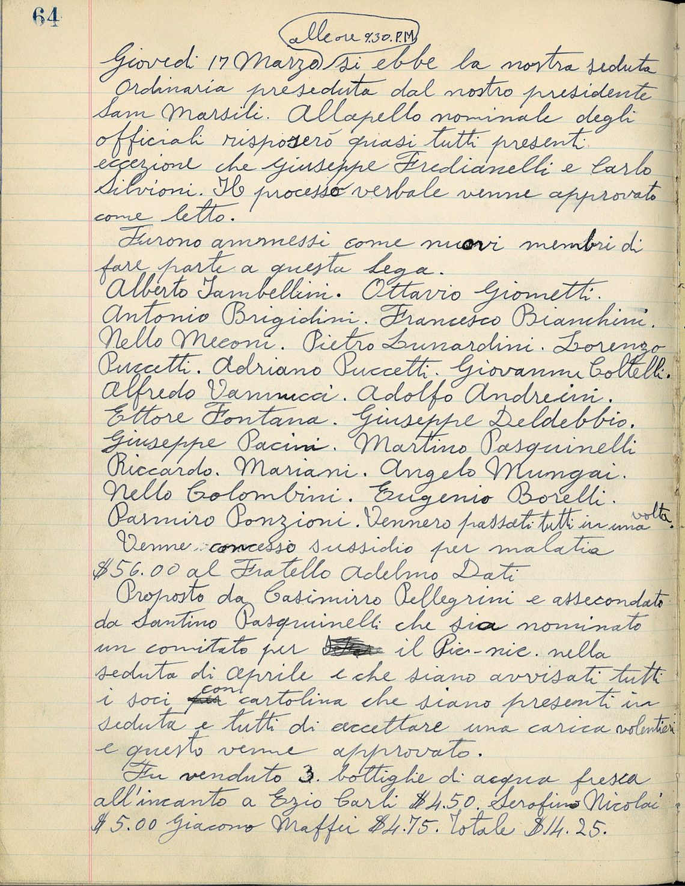Manuscript page number 64.
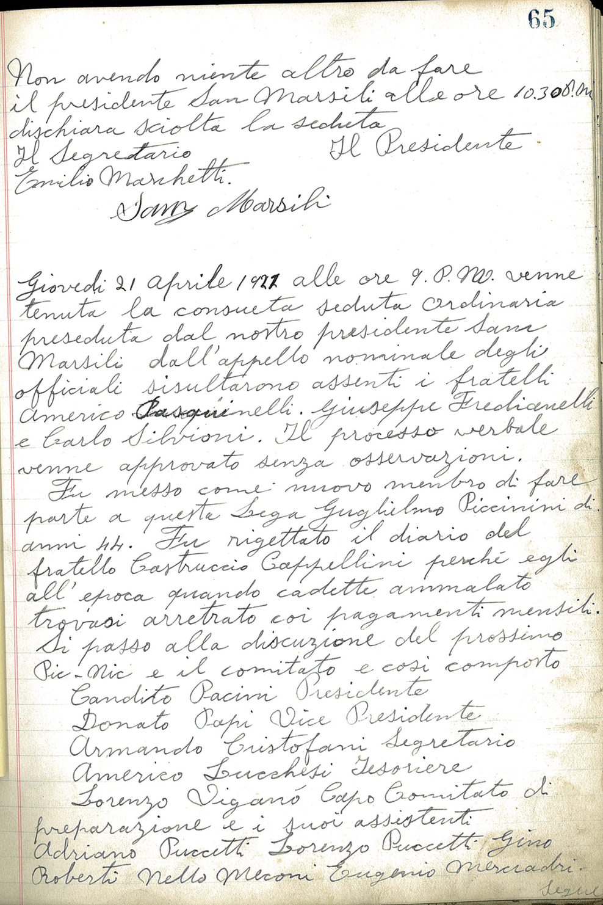Manuscript page number 65.
Giovedi 17 Marzo alle ore 9:30 P.M.si ebbe la nostra seduta
Ordinaria preseduta dal nostro presidente
Sam
Marsili.
Allapello nominale degli
officiali risposero’ quasi tutti
presenti
eccezione che
Giuseppe Fredianelli
e Carlo
Silvioni.
Il processo verbale venne approvato
come letto.
Furono ammessi come nuovi membri di
fare parte a questa Lega.
Alberto Tambellini.
Ottavio Giometti.
Antonio Brigidini.
Francesco Bianchini.
Nello Meconi.
Pietro Lunardini.
Lorenzo
Puccetti.
Adriano Puccetti.
Giovanni Coltelli.
Alfredo Vannucci.
Adolfo Andreini.
Ettore Fontana.
Giuseppe Deldebbio.
Giuseppe Pacini.
Martino Pasquinelli.
Riccardo Mariani.
Angelo Mungai.
Nello Colombini.
Eugenio Borelli.
Pasmiro Ponzioni.
Vennero passati tutti in una volta.
Venne concesso sussidio per malatia
$56.00
al Fratello Adelmo Dati.
Proposto da Casimirro Pellegrini e assecondato
da
Santino
Pasquinelli che sia nominato
un comitato per il Pic-Nic
nella
seduta di Aprile e che siano avvisati tutti
i soci con
cartolina che siano presenti in
seduta e tutti di accettare una carica
voluntieri
e questo venne approvato.
Fu venduto 3 bottiglie di
acqua fresca
all’incanto a Ezio Carli
$4.50. Serafino Nicolai
$5.00 Giacomo Maffei $4.75. Totale $14.25.
Non avendo niente altro da fare
il presidente Sam Marsili alle ore 10:30
P.M.
dischiara sciolta la seduta
Il Segretario Il Presidente
Emilio Marchetti
Sam Marsili
Manuscript page number 65.
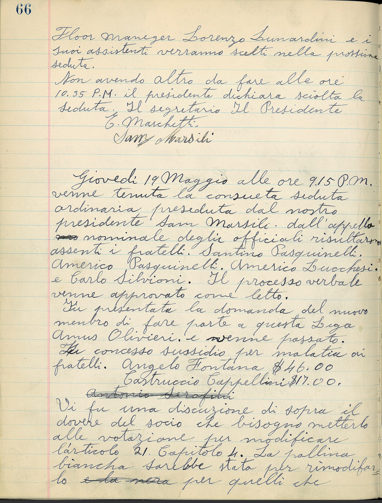Manuscript page number 66.
Giovedi 21 Aprile 1921 alle ore 9. P.M. venne
tenuta la consueta
seduta ordinaria
preseduta dal nostro presidente
Sam
Marsili
dall’appello nominale degli
officiali risulatarono assenti i
fratelli
Americo Pasquinelli,
Giuseppe Fredianelli
e Carlo Silvioni.
Il processo verbale
venne approvato senza osservazioni.
Fu messo come nuovo membro di fare
parte a questa Lega
Guglielmo Piccinini di
anni
44.
Fu rigettato il diario del
fratello Castruccio Cappellini perche’ egli
all’epoca quando cadette
ammalato
trovasi arretrato coi pagamenti mensili.
Si passo alla discuzione del prossimo
Pic-Nic e il comitato e cosi
composto
Candito Pacini
Presidente
Donato Papi
Vice Presidente
Armando Cristofani
Segretario
Americo Lucchesi
Tesoriere
Lorenzo Vigano’
Capo Comitato di
preparazione
e i suoi assistenti
Adriano Puccetti
Lorenzo Puccetti
Gino
Roberti
Nello Meconi
Eugenio Merciadri.
segue
Floor manager
Lorenzo Lunardini
e i
suoi assistenti verranno scelti nella prossima
seduta.
Non avendo altro da fare alle ore
10.35 P.M. il
presidente dichiara sciolta la
seduta. Il segretario Il Presidente
E. Marchetti
Sam Marsili
Manuscript page number 66.
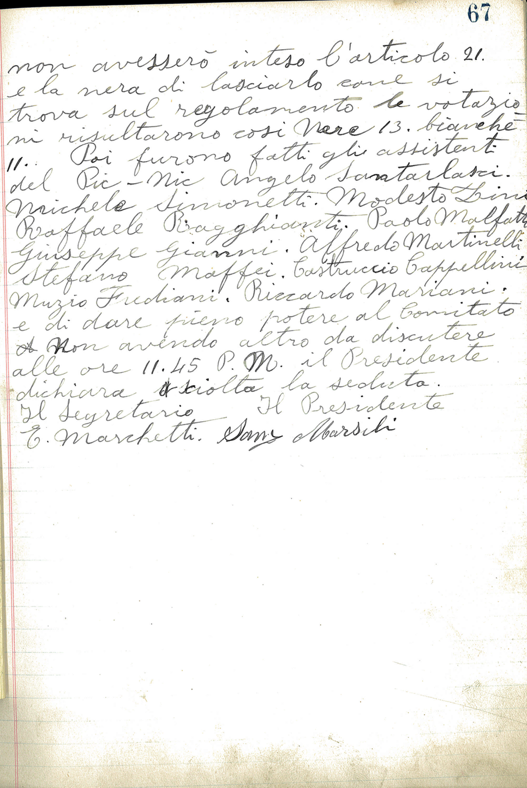Manuscript page number 67.
Giovedi 19 Maggio alle ore 9.15. P.M.
venne tenuta la consueta
seduta
ordinaria preseduta dal nostro
presidente Sam Marsili
dall’appello
nominale degli officiali risultarono
assenti i
fratelli
Santino Pasquinelli,
Americo Pasquinelli,
Americo Lucchesi,
e Carlo Silvioni.
Il processo verbale
venne approvato come letto.
Fu presentata la domanda del nuovo
membro di fare parte a questa
Lega
Amus Olivieri e venne
passato.
Fu concesso sussidio per malatia ai
Fratelli. Angelo
Fontana
$46.00
Castruccio Cappellini
$17.00.
Antonio Serafini
Vi fu una discuzione di sopra
il
dovere del socio che bisogno metterlo
alle votazione per
modificare
l’articolo 21 Capitolo 4. La pallina
biancha sarebbe stata
per rimodifar-
lo e la nera per quelli che
non avessero inteso l’articolo 21
e la nera di lasciarlo come
si
trova nel regolamento le votazio-
ni risultarono cosi Nere 13.
bianche
11.
Poi furono fatti gli assistenti
del Pic-Nic
Angelo Santarlasci,
Michele Simonetti,
Modesto Zini
Raffaele Ragghianti,
Paolo Malfatti
Giuseppe Gianni,
Alfredo Martinelli
Stefano Maffei,
Castruccio Cappellini
Muzio Frediani,
Riccardo Mariani,
e di dare pieno potere al Comitato
Non avendo altro da discutere
alle ore 11.45 P.M. il Presidente
dichiara sciolta la seduta.
Il Segretario Il Presidente
E. Marchetti
Sam Marsili
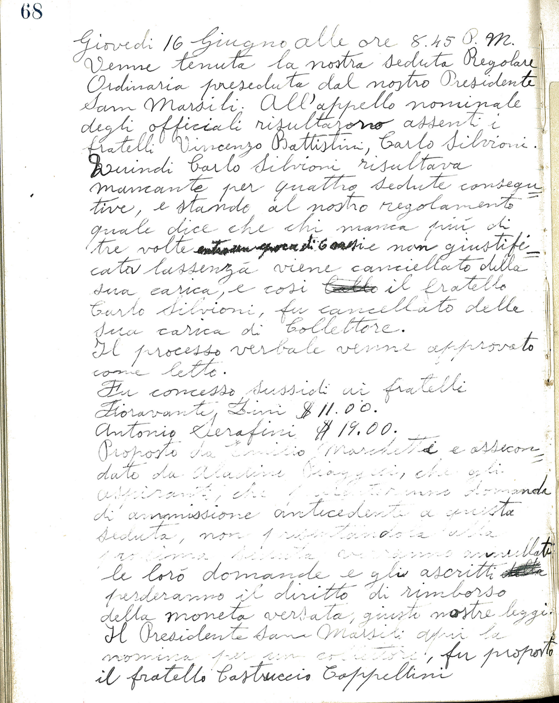Manuscript page number 68.
 Manuscript page number 69.
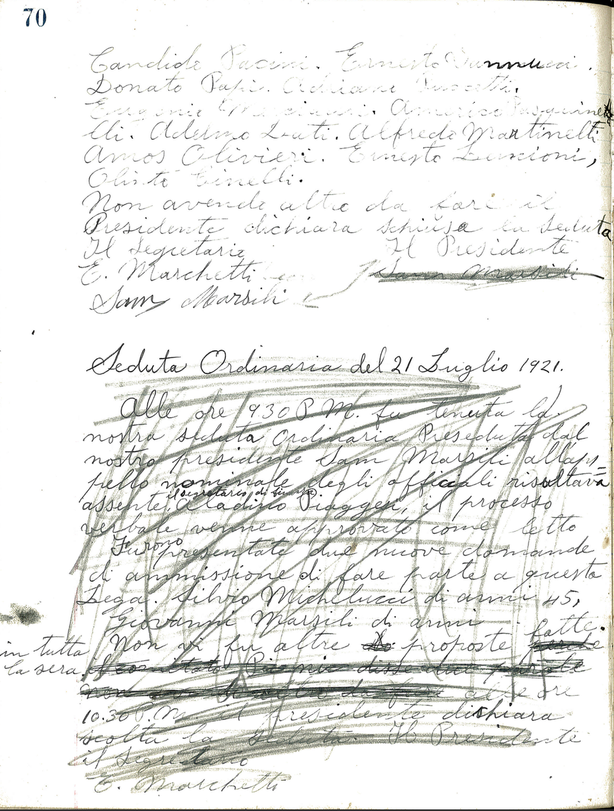Manuscript page number 70.
Manuscript page number 69.
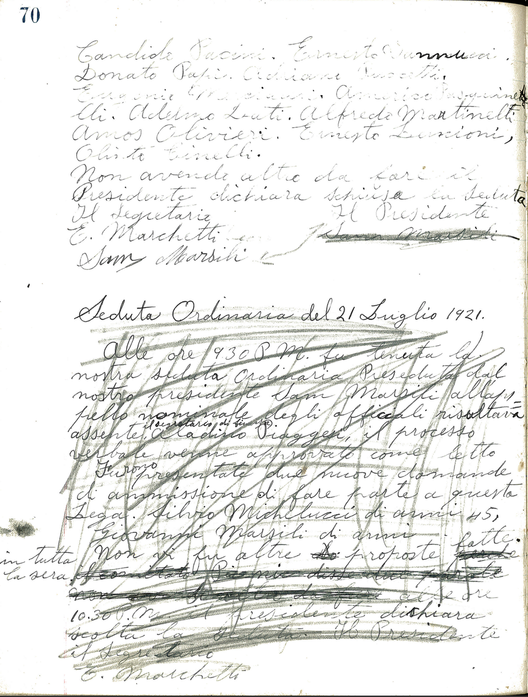Manuscript page number 70.
Giovedi 16 Giugno alle ore 8.45 P.M.
Venne tenuta la nostra
seduta Regolare
Ordinaria preseduta dal nostro
Presidente
Sam Marsili.
All’appello nominale
degli officiali risultarono assenti i
fratelli
Vincenzo Battistini,
Carlo
Silvioni.
Quindi Carlo Silvioni risultava
mancante per quattro sedute consegu-
tive, e stando al nostro
regolamento
quale dice che chi manca piu’ di
tre volte entro epoca di 6
mesi e non giustifi-
cata lassenza viene canciellato della
sua carica, e
cosi Callo
il fratello
Carlo Silvioni, fu
cancellato della
sua carica di Collettore.
Il processo verbale venne
approvato
Come letto.
Fu concesso sussidi ai fratelli
Fioravante
Zini
$11.00.
Antonio
Serafini
$19.00.
Proposto da Emilio Marchetti e assecon-
dato da
Aladino Piaggesi, che
gli
aspiranti che presenteranno domanda
di ammissione anticedente a
questa
seduta, non presentandola alla
prossima seduta verranno
annullate
le loro domande e gli ascritti della
perderanno il diritto di rimborso
della moneta versata,
giusto nostre leggi.
Il Presidente Sam Marsili apri
la
nomina per un collettore, fu
proposto
il fratello Castruccio Cappellini
da Alfredo
Martinelli assecondato
dal fratello Lorenzo Vigano’ e fu
passato ad una
anemita’.
Proposto dal fratello Stefano Maffei
assecondato
dal fratello Lorenzo
Vigano’
di mettere Giovanni
Pasquinelli nella
Lega come membro Onorario se la
semblea lo avesse accettato e
questo venne accettato da tutta
la
semblea generale.
Proposto dal fratello Muzio Frediani
Assecondato
da Lorenzo Vigano’
che
Sia dato il premio a quella persona
Che a venduto di piu’
biglietti per
La festa da ballo del 27 giannaio 1921
E di non passare
i $10.00 e non
sotto $1.00.
Castruccio Cappellini e
Muzio Frediani
Michele Simonetti nominati di compera-
re il premio.
Poi fu aperta la nomina del
Comitato Pic-Nic de 38 Agosto P.V.
Il comitato e cosi Composto.
Carlo Marconi, Presidente
Castruccio Cappellini, Vice Presidente
Santino Pasquinelli, Tesoriere
Giuseppe Gianni, Segretario
Capo Comitato di
Preparazione
Michele Simonetti
Vice Capo,
Stefano
Maffei,
Floor Maneger
Ramialdo Vigano’
Assistenti
Giuseppe
Fredianelli
Sam Marsili,
Americo Lucchesi
Candido Pacini,
Ernesto Vannucci,
Donato Papi,
Adriano Puccetti,
Eugenio Merciadri,
Americo
Pasquinelli,
Adelmo Dati,
Alfredo Martinelli,
Amos Olivieri,
Ernesto ,
Olinto Cinelli.
Non avendo altro da fare il
Presidente
dichiara schiusa la seduta
Il Segretario Il Presidente
E. Marchetti
Sam Marsili
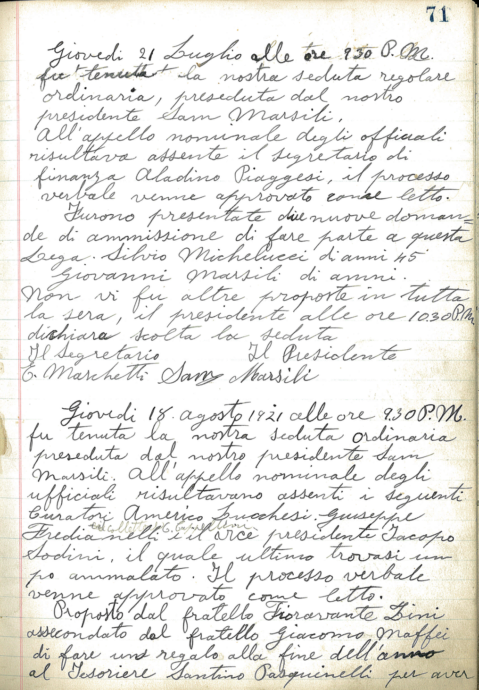Manuscript page number 71.
Giovedi 21 Luglio alle ore 9.30 P.M.
fu tenute la nostra seduta
regolare
ordinaria, preseduta dal nostro
presidente Sam Marsili,
all’appello nominale degli officiali
risultava assente
il segretario di
finanza Aladino
Piaggesi
, il processo
verbale venne approvato conme letto.
Furono presentate due nuove doman-
de di ammissione di fare parte a
questa
Lega.
Silvio Michelucci di anni
45
Giovanni Marsili di anni
non vi fu altre proposte in tutta
la sera,
il presidente alle ore 10.30 P.M
dichiara scolta
la seduta
Il Segretario Il Presidente
E. Marchetti
Sam Marsili
Manuscript page number 71.
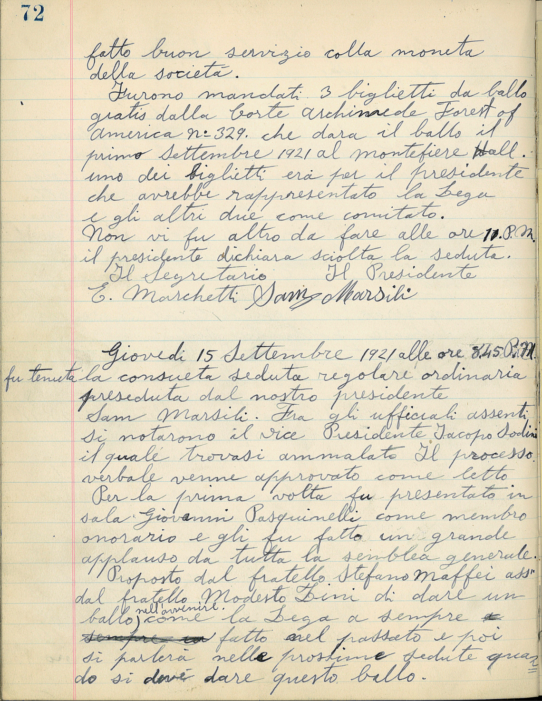Manuscript page number 72.
Giovedi 18 agosto 1921 alle ore 9.30 P.M.
fu tenuta la nostra
seduta ordinaria
preseduta dal nostro presidente
Sam
Marsili.
All’appello nominale degli
ufficiali risultavano assenti i
seguenti
Curatori
Americo Lucchesi.
Giuseppe
Fredianelli
il vice presidente Jacopo
Sodini
, il quale ultimo trovasi un
po ammalato. Il processo verbale
venne approvato come letto.
Proposto dal fratello Fioravante Zini
assecondato dal fratello
Giacomo Maffei
di fare un regalo alla fine dell’anno
al Tesoriere Santino Pasquinelli per aver
fatto buon servizio colla moneta
della societa’.
Furono mandati 3 biglietti da ballo
gratis dalla forte archimede Forest
of
America no 329. che dara il ballo il
primo Settembre 1921 al
montefiore Hall.
uno dei biglietti era per il
presidente
che avrebbe rappresentato la Lega
e gli altri due
come comitato.
Non vi fu altro da fare alle ore 11 P.M.
il presidente dichiara sciolta la seduta.
Il
Segretario Il Presidente
E. Marchetti
Sam Marsili
Manuscript page number 72.
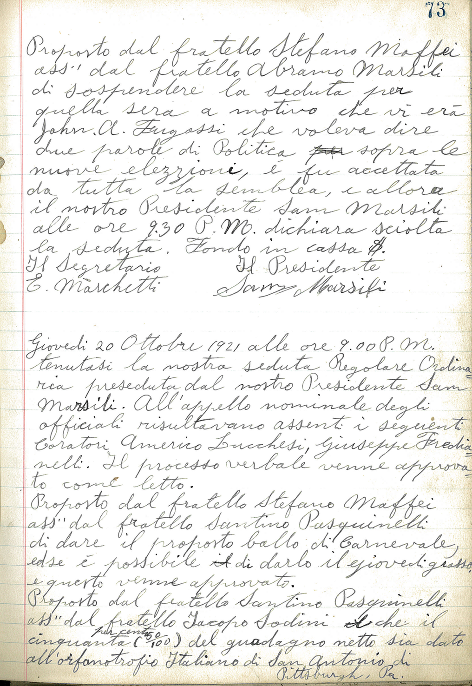Manuscript page number 73.
Giovedi 15 Settembre 1921 alle ore 8.45 P.M.
fu tenuta la
consueta seduta regolare ordinaria
preseduta dal
nostro presidente
Sam Marsili.
Fra gli ufficiali assenti
si notarono
il vice Presidente Jacopo
Sodini
il quale trovasi ammalato il processo
verbale venne approvato
come letto.
Per la prima volta fu presentato in
sala
Giovanni Pasquinelli
come membro
onorario e gli fu fatto un grande
applauso da tutta
la semblea generale.
Proposto dal fratello Stefano Maffei ass
dal fratello Modesto Zini di
dare un
ballo nell’avvenire come la Lega a sempre
fatto nel passato e
poi
si parlera’ nelle prossime sedute quan-
do si dove’ dare questo
ballo.
Proposto dal fratello Stefano Maffei
ass dal fratello Abramo Marsili
di sospendere la seduta per
quella sera a motivo che vi era’
John A. Fugassi che voleva dire
due
parole di Politica sopra le
nuove elezzioni, e’ fu accettata
da tutta
la semblea,
e allora
il nostro Presidente Sam Marsili
alle
ore 9.30 P.M. dichiara sciolta
la seduta. Fondo in cassa $.
Il
Segretario Il Presidente
E. Marchetti
Sam Marsili
Manuscript page number 73.
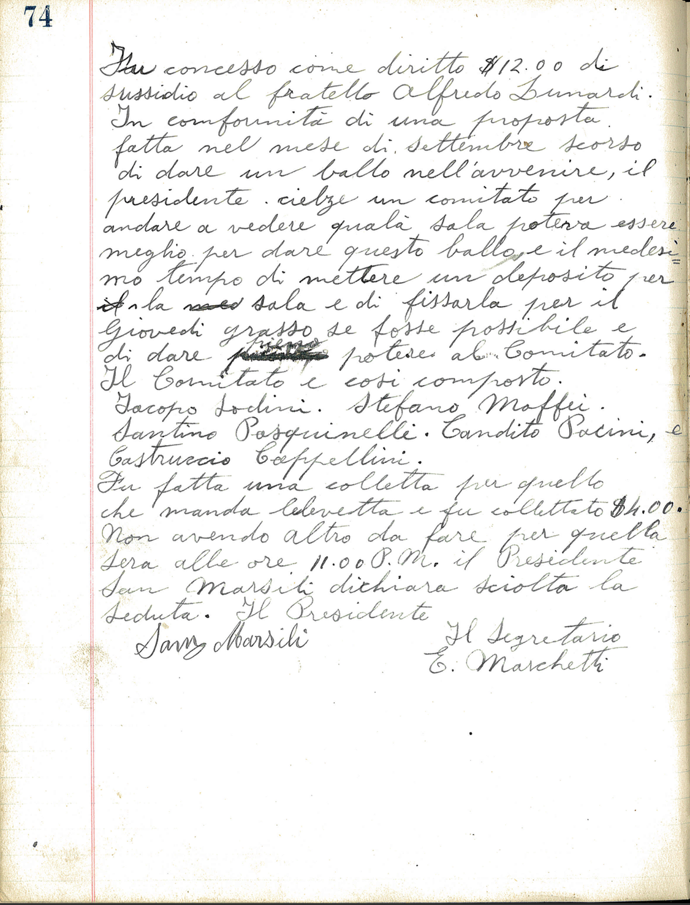Manuscript page number 74.
Giovedi 20 Ottobre 1921 alle ore 9.00 P.M.
tenutasi la nostra
seduta Regolare Ordina-
ria preseduta dal nostro
Presidente Sam
Marsili.
All’appello nominale degli
officiali risultavano assenti i
seguenti
coratori
Americo Lucchesi,
Giuseppe Fredia-
nelli.
Il processo verbale venne approva-
to come letto.
Proposto dal fratello Stefano Maffei
ass dal fratello Santino
Pasquinelli
di dare il proposto ballo di Carnevale,
edse e’ possibile di darlo il giovedi grasso
e questo venne
approvato.
Proposto dal fratello Santino Pasquinelli
ass
dal fratello Jacopo
Sodini
i che il
cinquanta percento (50/100) del guadagno
netto sia dato
all’orfanotrofio Italiano di San Antonio di
Pittsburgh, Pa.
...In concesso come diritto $12.00 di
Sussidio al fratello Alfredo
Lunardi.
In conformita’ di una proposta
Fatta nel
mese di settembre scorso
Di dare un ballo nell’avvenire, il
presidente cielze un comitato per
andare a vedere quala’
sala potera essere
Meglio per dare questo ballo, e il medesi-
mo tempo
di mettere un deposito per
la meo sala e di fissarla
per il
giovedi grasso se fosse possible e
Di dare pieno potere al comitato.
Il Comitato e cosi composto.
Jacopo Sodini.
Stefano Maffei.
Santino Pasquinelli.
Candito Pacini,
e
Castruccio Cappellini.
Fu fatta una colletta fu quello
Che manda lelevetta e fu collettato $4.00.
Non avendo altro da fare per quella
sera alle ore 11.00 P.M.
il presidente
Sam Marsili dichiava
sciolta la
Seduta. Il Presidente
Sam Marsili Il segretario
E. Marchetti
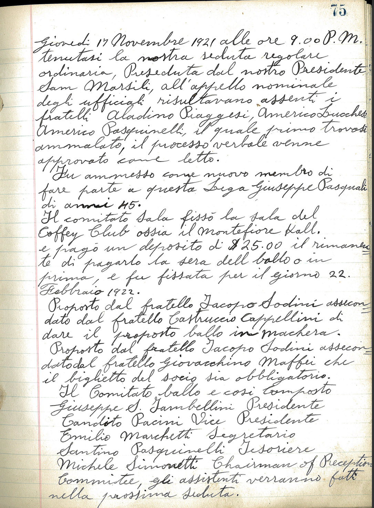Manuscript page number 75.
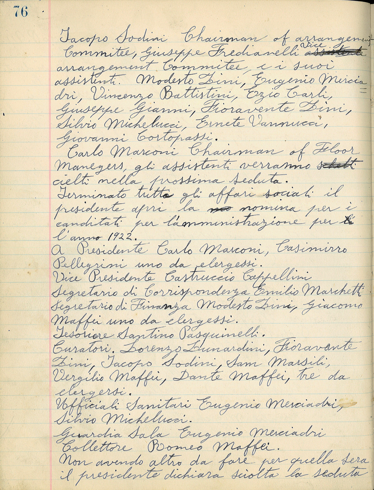Manuscript page number 76.
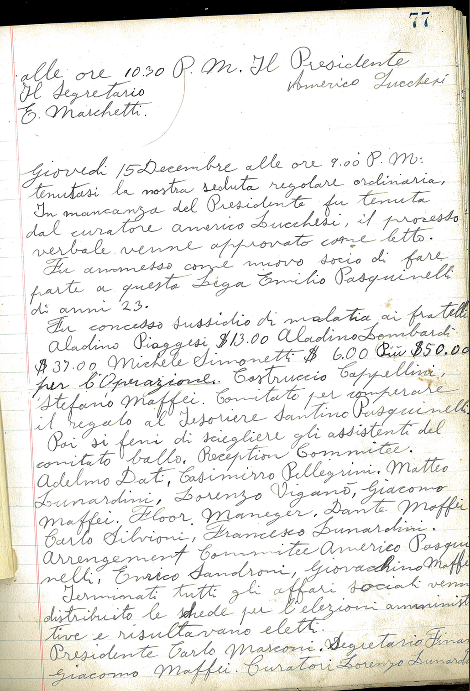Manuscript page number 77.
Giovedi 17 Novembre 1921 alle ore 9.00 P.M.
Tenutasi la nostra
seduta regolare
Ordinaria, Preseduta dal nostro
Presidente
Sam Marsili,
all’appello nominale
Degli ufficiali risultavano assenti i
Fratelli
Aladino Piaggesi,
Americo Lucchesi
Americo Pasquinelli,
il quale primo trovasi
Ammalato,
il processo verbale venire
Approvato come letto.
Fu ammesso come nuovo membro di
fare parte a questa Lega
Giuseppe Pasquali
Di anni
45.
Il comitato Sala fisso’ la sala del
Coffey Club ossia il
Montefiore Hall.
E pago’ un deposito di $25.00 il rimandan-
te di
pagarlo la sera dell ballo o in
Prima, e fu fissata per il giorno 22
Febbraio 1922.
Proposto dal fratello Jacopo Sodini assecon-
Dato
dal fratello Cartruccio
Cappellini di
Dare il proposto ballo in machera.
Proposto dal fratello Jacopo Sodini assecon-
Dato dal
fratello Giovacchino
Maffei che
Il biglietto del socio sia obbligatorio.
Il Comitato ballo e cosi composto
Giuseppe S. Tambellini
Presidente
Candito Pacini
Vice Presidente
Emilio Marchetti
Segretario
Santino Pasquinelli
Tesoriere
Michele Simonetti
Chairman of Reception
Commitee
, gli assistenti verranno fatti
Nella prossima seduta.
Jacopo Sodini
Chairman of arrangement
Commitee,
Giuseppe Fredianelli
^Vice
assestenti
Arrangement Commitee,
e i suoi
Assistenti.
Modesto Zini,
Eugenio Mercia-
dri,
Vincenzo
Battistini,
Ezio Carli,
Giuseppe Gianni,
Fioravente Zini,
Silvio Michelucci,
Ernete Vannucci,
Giovanni
Cortopassi.
Carlo Marconi
Chairman of Floor
Managers,
gli assistenti verranno schelti
Cielti nell
prossima Seduta.
Terminato tutto gli affari sociali il
Presidente apri la nomina per i
Candidati per
l’amministrazione per
L’anno 1922.
A Presidente Carlo Marconi, Casimirro
Pellegrini uno da elergessi.
Vice Presidente
Castruccio Cappellini
Segretario
di corrisponderza Emilio Marchetti
Segretario di Finanza Modesto Zini, Giacomo
Maffei uno da elergessi.
Tesoriere Santino Pasquinelli.
Curatori. Lorenzo Lunardini, Fioravente
Zini, Jacopo
Sodini, Sam Marsili,
Vergilio Maffei, Dante Maffei, tre da
elergesi.
Ufficiali Sanitari
Eugenio Merciadri,
Silvio Michelucci.
Guardia Sala
Eugenio Merciadri
Collettore
Romeo Maffei.
Non avendo altro da fare per quella sera
il presidente dichiarava sciolta la seduta.
Alle ore 10.30 P.M. Il Presidente
Il Segretario
Americo Lucchesi
E. Marchetti
 Manuscript page number 77.
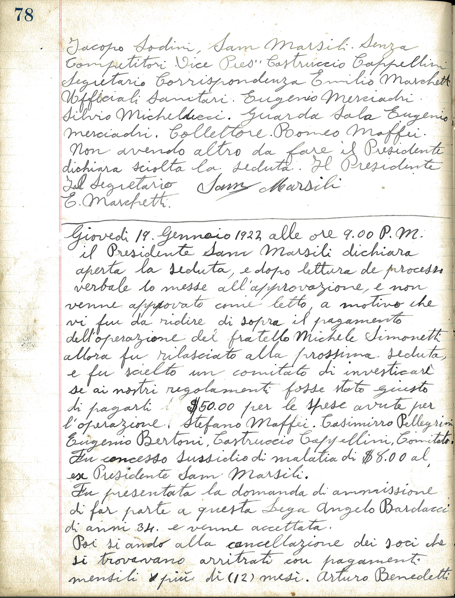Manuscript page number 78.
Manuscript page number 77.
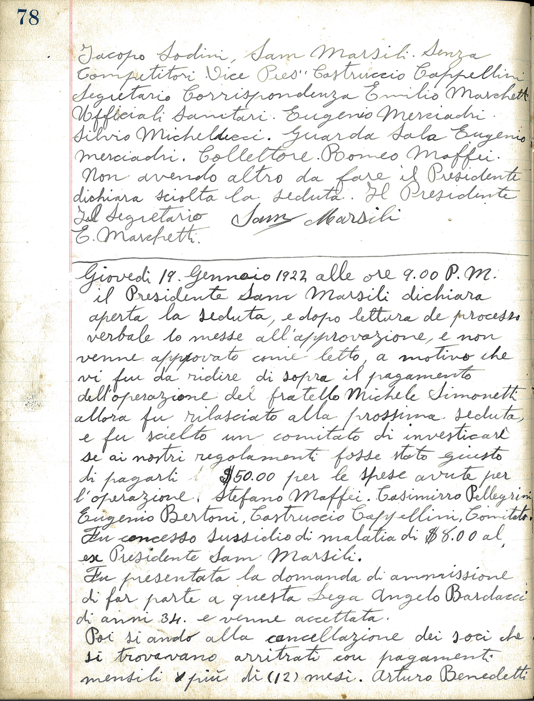Manuscript page number 78.
Giovedi 15 Decembre alle ore 9.00 P.M.
Tenutasi la nostra seduta
regolare ordinaria,
In mancanza
del Presidente
fu tenuta
dal curatore americo Lucchesi, il
processo
verbale venne approvato come letto.
Fu ammesso come nuovo socio di fare
Parte a questa Lega
Emilio Pasquinelli
Di anni
23.
Fu concesso sussidio di malatia di fratelli
Aladino
Piaggesi
$13.00
Aladino
Lombardi
$37.00
Michele
Simonetti
$6.00 Piu’ $50.00
Per
l’Operazione.
Castruccio Cappellini,
Stefano Maffei. Comitato per comperare
Il
regalo al Tesoriere Santino Pasquinelli.
Poi si feri di sciegliere gli assistenti del
Comitato ballo.
Reception Commitee.
Adelmo Dati,
Casimirro
Pellegrini.
Matteo
Lunardini,
Lorenzo Vigano’,
Giacomo
Maffei.
Floor Manager.
Dante Maffei
Carlo Silvioni,
Frencesco
Lunardini.
Arrengement commitee
americo Pasqui-
nelli,
Enrico Sandroni,
Giovacchino Maffei
Terminati tutti gli affati sociali venne
Distribuito le schede per
l’elezioni amministra-
Tive e risultavano eletti
Presidente
Carlo Marconi.
Segretario Finanza
Giacomo Maffei.
Curatori
Lorenzo Lunardini
Jacopo Sodini,
Sam Marsili,
Senza
Competitori Vice
Pres
Castruccio Cappellini
Segretario
Corrispondenza
Emilio Marchetti
Ufficiali Sanitari
Eugenio Merciadri
Silvio Michellucci.
guarda Sala
Eugenio
Merciadri.
Collettore
romeo Maffei.
Non avendo altro da fare il Presidente
dichiara sciolta la seduta. Il Presidente
Il Segretario Sam
Marsili
E. Marchetti